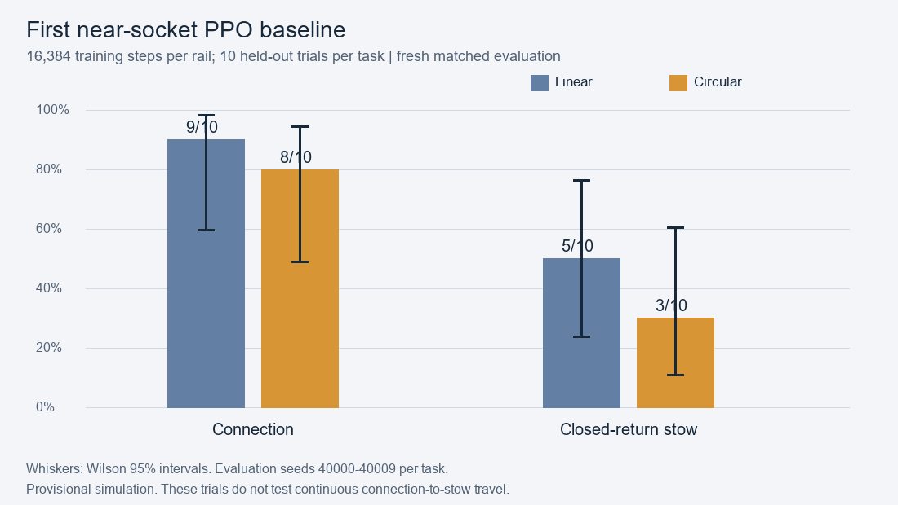
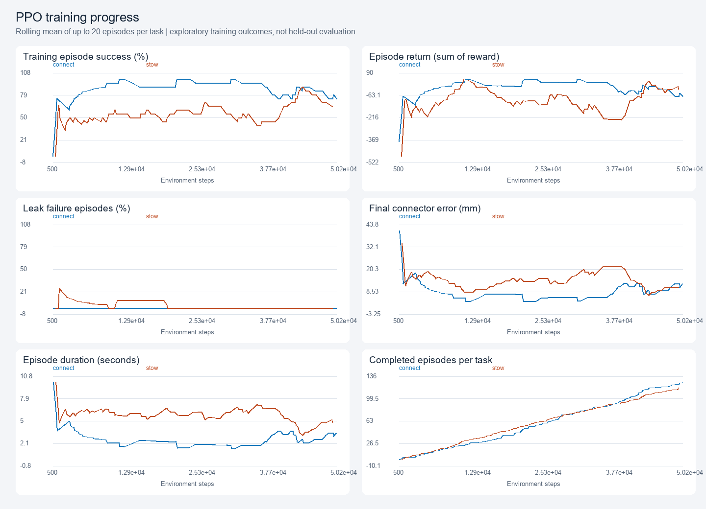
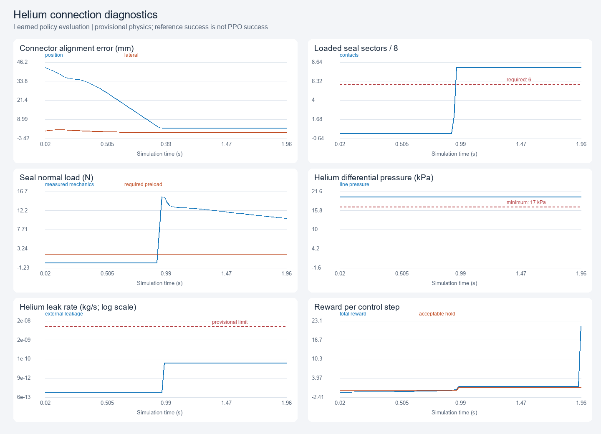
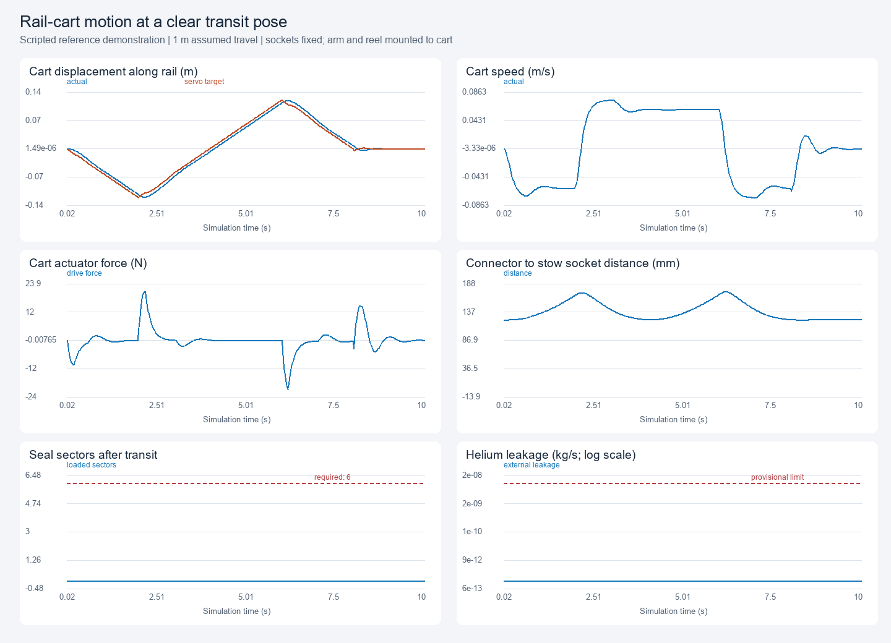

Home / Simulations / SHERPA
SHERPA / Robot training study
Arm, hose and rail
Circular-rail dynamics, coordinated docking policies and a straight-rail comparison.
The local MuJoCo model uses a seven-joint Franka arm, a segmented flexible hose and zero gravity. The spacecraft deck is fixed; spacecraft recoil and attitude motion are outside this model. Each rail adds one degree of freedom. The original straight-rail preview uses a 1 m stroke; the matched PPO study uses 0.875 m of travel for each geometry. Both the arm and hose reel ride on the cart; the sockets stay fixed.
Linear rail trade study / Scripted preview / Silent
Linear rail trade-study baseline
The intended SHERPA rail is circular. This straight-rail alternative is a scripted trade-study baseline: one translation axis carries the arm and reel, with the valve closed and the connector clear of the socket. It travels in both directions and returns to center. Dimensions, mass and drive parameters are provisional; this original preview is separate from the circular simulation and learned policies below.
Learned policy evaluation / Silent
Learned helium connection
Deterministic PPO rollout: an already grasped hose starts 40 mm from the overhead socket, aligns, seats and holds a helium leak check. The policy uses estimated RGB-D marker positions, noisy encoders and simulated instruments.
Learned policy evaluation / Silent
Learned closed-return purge stow
Deterministic PPO rollout into the lower, upward-facing socket. The policy establishes a sealed hold with helium returning to a closed reservoir. The modeled task ends at purge initiation and stable pressure hold.
Circular rail: carriage, arm and reel
The SHERPA source rail has a 1.25 m median radius. This proxy uses a provisional ±0.35 rad arc (0.875 m travel). Carriage yaw follows the track angle; the arm and reel turn with it. The scripted sweep keeps the valve closed and the connector clear of both sockets.
Circular rail: learned near-socket connection
A PPO policy commands seven arm joints, a valve request and the cart drive from 61 instrument observations. This near-socket curriculum starts 40 mm from the selected socket with cart offsets within ±3 mm. Training focuses on final approach and docking.
Linear versus circular rail
Both near-socket policies trained for 16,384 PPO steps, initialized from fixed-base weights and successful reference demonstrations. The same arm, fixtures, pressure assumptions and 0.875 m travel bounds are used. Evaluation covers ten connection and ten stow trials per geometry, with initial cart offsets within ±3 mm. This compares near-socket docking.
| Metric | Linear rail | Circular rail |
|---|---|---|
| Connection success | 9/10 | 8/10 |
| Stow success | 5/10 | 3/10 |
| All tasks: success, 95% Wilson interval | 14/20; 48–85% | 11/20; 34–74% |
| Successful trials: mean duration | 1.97 s | 1.81 s |
| Successful trials: mean absolute rail work | 2.16 mJ | 1.26 mJ |
| All trials: minimum hose bend radius | 79.36 mm | 79.32 mm |
| All trials: maximum hose net twist | 0.458 rad | 0.588 rad |
| Separate inverse-kinematic port screen | 35/36 | 36/36 |
Overlapping uncertainty intervals leave the configuration ranking unresolved. Duration and mechanical work average successful trials only; work integrates absolute actuator power. The 36-port inverse-kinematics screen uses identical world poses and matched travel. Dynamic reach also depends on collision clearance and hose routing.


Trial-level comparison / Circular sweep verification
Continuous connection-to-stow transfer is a separate experimental stage. One scripted circular transfer has completed source leak check, withdrawal, travel and destination purge hold. Reverse-transfer routing still needs verification. Full-mission PPO remains in training; successful learned continuous transfer is still an open objective. The transfer prototype adds a provisional side-entry adapter, rear connector stub, raised reel outlet and limited-angle swivel; those changes are not part of the completed near-socket comparison.
What the policy learns
The completed fixed-base policy trained for 50,176 environment steps after initialization from four successful reference trajectories. It commands seven joint increments and a valve request, using 54 observations from simulated RGB-D localization, encoders, reel and pressure/contact instruments. Each episode begins pregrasped, 40 mm from its selected socket. This original policy tests one socket at a time. The later coordinated rail policies and their separate evaluation are described above; hose pickup remains outside these pregrasped tasks.
Reward favors alignment, seal contact coverage, adequate preload and a stable pressure hold. Leaks, unnecessary motion and blocked valve requests incur penalties. Success earns +20; leak failure, overload or invalid grasp incurs -20. Success requires at least six of eight loaded seal sectors, adequate normal force and friction margin, pressure above 85% nominal and leakage below the provisional threshold throughout a 0.5 s connection hold or 1 s stow hold.
In two held-out episodes per task, connection succeeded in 2/2 and purge stow in 1/2, with no leak-failure terminations. These four diagnostic episodes provide a small initial sample. The videos show separate policy evaluations; the near-socket rail policies use the larger comparison above.
Learning and physics diagnostics






Model assumptions
Helium starts at a provisional 20 kPa differential to external vacuum. A closed 5 kPa return reservoir receives purge flow. Pressure changes empirical hose stiffness and applies a separating load; effective seal area and a compressible-orifice model approximate leakage and recoil. The provisional leak limit is 10-8 kg/s, with a 0.10 s failure dwell. Seal wear, molecular-flow leakage, fluid temperature coupling and real detector calibration are not represented. A liquid capillary trap is deferred.
The Franka geometry originates from NVIDIA's Isaac Sim asset library. The SimReady hose reference is by NVIDIA under CC BY 4.0; the moving hose is an authored segmented dynamics surrogate. Arm and rail geometry here are training substitutes for SHERPA hardware. Flight qualification requires hardware testing.
Simulation data / NVIDIA SimReady assets / SHERPA mission robotics